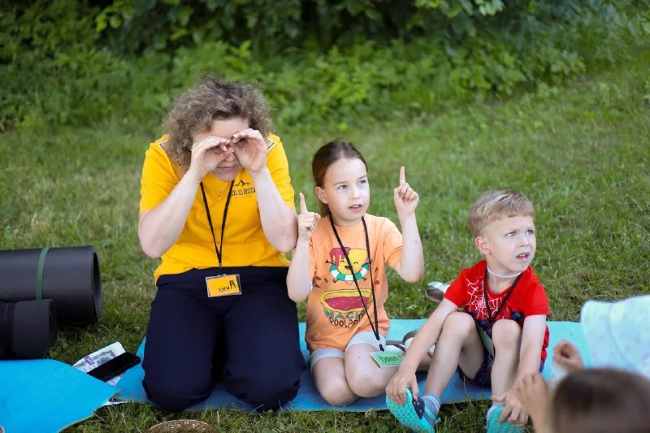

Co robimy
Wszystko, co robimy, dzieje się regularnie
Bez zapisów i bez opłat. Poniżej znajdziesz wszystko, co dzieje się u nas w ciągu tygodnia i w ciągu roku.
Spotykamy się
Al. Gen. Władysława Sikorskiego 114, Rzeszów
Zobacz na mapie →
Aktualności
Co się u nas dzieje
Krótki przegląd: co zaplanowane na najbliższe dni i co wydarzyło się ostatnio. Wszystko trafia najpierw na nasz kanał na Telegramie — tutaj zbieramy to w jednym miejscu.
Najświeższe informacje o spotkaniach i półkoloniach publikujemy na kanale Telegram.
Niedziela, 11:00
Niedzielne nabożeństwo
Spotykamy się na wspólne uwielbienie, rozważanie Słowa i modlitwę. Spotkanie trwa zwykle około półtorej godziny, a po nim zostajemy na kawę i rozmowę — często dłużej niż samo nabożeństwo.
W trakcie nabożeństwa dla dzieci działa szkółka niedzielna, więc rodzice mogą spokojnie zostać na sali. Raz w miesiącu łamiemy chleb, a regularnie modlimy się o uzdrowienie — i słuchamy świadectw tych, którzy je otrzymali.
Nie ma dress code'u, nie ma zbiórki przy wejściu i nikt nie będzie cię prosił, żebyś się przedstawił przed wszystkimi.

Wiek 6–13 lat · bezpłatnie
Półkolonie i programy dla dzieci
Kilka razy w roku organizujemy kilkudniowe programy dzienne dla dzieci. Ostatni, „Sekretna sprawa”, był grą detektywistyczną — z zagadkami, scenkami teatralnymi, piosenkami, dmuchańcem i nagrodami.
Latem robimy też dzień wodny, wyjścia do parku i gry zespołowe. Wszystko prowadzą nasi wolontariusze, a udział jest całkowicie bezpłatny — również dla rodzin, które nie mają z nami nic wspólnego.
Terminy najbliższych turnusów ogłaszamy na Telegramie z kilkutygodniowym wyprzedzeniem.

W ciągu tygodnia
Młodzież, grupa domowa i spotkania kobiet
Poza niedzielą dzieje się u nas kilka mniejszych rzeczy — i to zwykle tam ludzie naprawdę się poznają.
Klub młodzieżowy
Spotkania dla nastolatków w niedziele o 16:00. Atmosfera przyjaźni, śmiechu i nowych znajomości — plus rozmowy o rzeczach, o których nie zawsze da się pogadać w domu.
Grupa domowa
Środy o 18:00. Mniejsze grono, wspólne czytanie Biblii, modlitwa i zwyczajna rozmowa przy herbacie. Dobre miejsce, żeby zacząć, jeśli duże spotkanie wydaje ci się onieśmielające.
Spotkania kobiet
Wieczory przy wspólnym stole — rozmowa, warsztaty, czas bez pośpiechu. Terminy ogłaszamy na bieżąco.
Siatkówka i pikniki
Wiosną i latem gramy w siatkówkę i jeździmy na pikniki do parku Lisia Góra — grill, plac zabaw dla dzieci, rowery i lody.
Pytania
Zanim przyjdziesz
W jakim języku są spotkania?
Nasza wspólnota powstała wśród osób ukraińskojęzycznych, więc nabożeństwa prowadzimy głównie po ukraińsku. Coraz częściej tłumaczymy je na polski i chętnie pomożemy ci się odnaleźć — napisz przed przyjściem, a się umówimy.
Czy muszę się wcześniej zapisać?
Nie. Na nabożeństwo i grupę domową można po prostu przyjść. Zapisy prowadzimy tylko na półkolonie dla dzieci, bo tam liczba miejsc jest ograniczona.
Ile to kosztuje?
Nic. Wszystkie nasze spotkania i programy dla dzieci są bezpłatne. Utrzymujemy się z dobrowolnych darowizn — nikt nie zbiera pieniędzy przy wejściu.
Mam małe dziecko — co z nim w trakcie?
W czasie niedzielnego nabożeństwa działa szkółka niedzielna prowadzona przez naszych wolontariuszy. Młodsze dzieci mogą też spokojnie zostać z rodzicami na sali — nikomu to nie przeszkadza.
Chcę pomóc jako wolontariusz
Świetnie — przy półkoloniach, muzyce, dzieciach i technice zawsze brakuje rąk. Wypełnij formularz zgłoszeniowy albo po prostu napisz do nas.
Najbliższe spotkanie: niedziela, 11:00
Al. Gen. Władysława Sikorskiego 114, Rzeszów